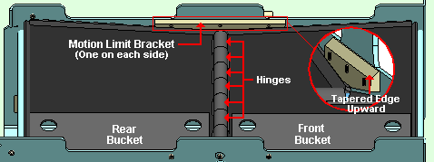
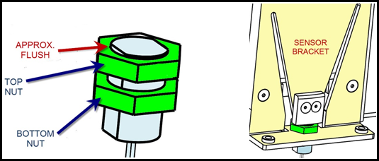
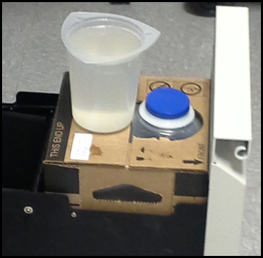

This procedure describes how to adjust and calibrate the weight sensors in the wash buffer supply and liquid waste drawers. An accurate adjustment of the sensor at 1.0 V DC will ensure the calibration voltage meets specifications.
Required Tools and Materials:
- 11/16-in open-end wrench
- Needle-nose vice grips (not part of the standard tool kit)
- Small flat-head screwdriver
- Loctite 220®
Note: The bulk wash buffer and bulk waste drawers use the same style Hall effect sensor to detect fluid weight. Each sensor is adjusted physically in the sensor bracket to produce approximately 1.0 V DC without force applied to the sensor. The calibration procedure verifies the software can determine and display the correct amount of fluid in the containers.
Perform the
adjustment procedure (Step 2) when:
- A new Hall effect sensor is installed.
- Calibration is unsuccessful.
Caution: Use caution when removing the sensors to prevent damage to the sensors. If the sensors are damaged, order a new set of sensors.
Perform the
calibration procedure (Step 3) when:
- installing an instrument.
- replacing or adjusting the weight sensor.
- the user interface
Supplies screen does not match the fluid level of the container.
- troubleshooting "Air detected in the wash buffer supply line" event messages.
-
Check the sensor voltage.
-
Remove the bulk container buckets by removing the 3 screws on each motion limit bracket, removing the brackets, and lifting the bucket out of the drawer.
Note: The wash buffer containers have brackets that prevent the buckets from lifting.

-
Configure a digital multimeter to read DC volts. Place the ground lead (black) on test point TP11 of the bulk fluids interface PCB at the rear of the drawer.
-
Place the positive lead (red) on the test point for the sensor that is being adjusted. Refer to the table to determine the correct test point.
| Fluidics PCB Test Point Locations
|
Bulk Container Hall Effect
|
Test Point located on Bulk Fluid Interface PCB
|

|
Wash Buffer Front
|
TP2
|
| Wash Buffer Rear
|
TP6
|
| Waste Drawer Front
|
TP2
|
| Waste Drawer Rear
|
TP6
|
-
Note the voltage values for the front and rear sensors.
- If the test point voltage values are with 1.0 +/- 0.1 VDC, reinstall the buckets and proceed to step 3 for calibration instructions.
- If a test point voltage value is not within 1.0 +/- 0.1 VDC, proceed to step 2 for adjustment instructions.
-
Adjusting or replacing the weight sensor.
-
Loosen the top and bottom nuts on the sensor.
- Use the needle-nose grips to hold onto the top nut.
- Use 11/16-in wrench to loosen the bottom nut.

-
If a sensor replacement is required:
- Remove the old sensor.
- Install the new sensor through the sensor bracket and thread it into the top nut.
- If a lock washer is part of the sensor replacement kit, place it on top of the bottom nut. The lock washer and bottom nut will secure the sensor to the sensor bracket from the underside.
-
Using the same test points as in the previous step, adjust the sensor until 1.0 +/- 0.1 V DC is obtained. To adjust the voltage, the sensor can be:
- rotated.
- raised one thread from flush.
- lowered one thread from flush.
-
Tighten the sensor locking nuts.
-
Verify the voltage reading on the test point is within specification.
-
Repeat steps for any other sensors being adjusted.
-
Apply Loctite 220® to the locking nuts.
-
Re-install the bulk container bucket and motion limit brackets.
Note: Ensure the tapered edge of the motion limit faces upward to prevent interference with the buckets. The orientation of the buckets and the motion limit brackets are shown in step 1.a.
-
Calibrate the weight sensors.
Table 57: Weight Sensor Voltage Guidelines
| Condition
|
If the bucket is:
|
And the buffer supply container or liquid waste container is:
|
Then the approximate maximum DC Voltage is:
|
| 1
|
absent
|
absent
|
1.0 +/- 0.1 V
|
| 2
|
present
|
absent
|
< 2.0 V
|
| 3
|
present
|
present but empty
|
< 2.2 V
|
| 4
|
present
|
present and full
|
< 4.8 V
|
Note: In this procedure, a full:
- wash buffer container is one that is unopened and full.
- liquid waste container is one that is 90% full of fluid.
Note: In this procedure, an empty:
- wash buffer or liquid waste container is one that is completely drained (no fluid).
Warning:
While performing the calibration, you must wait at least one minute before saving a voltage value (selecting done). This will allow enough time for the system to accurately determine the weight/voltage value.
-
Select
-
Remove both containers (buffer supply or liquid waste), but do not remove the buckets.
-
Confirm that the:
- buckets are positioned correctly and free to move (without binding).
- bucket limit bracket is positioned correctly (tapered edge upward).
- buckets are not moving, wiggling, or vibrating when the calibration is performed or voltage is checked.
-
Wait a minimum of 1 minute and select
Done
-
Place a full container in the front position and an empty container in the rear position.
Wait a minimum of 1 minute and select
Done
-
Place a full container in the rear position and an empty container in the front position.
Wait a minimum of 1 minute and select
Done
-
Observe the displayed DC voltages on the screen. Compare the reported voltages with the best practice ranges stated in Table 1. Adjust the sensors (Step 1) to meet the voltage specification if possible.
-
Select
Done and exit the calibration screen.
-
Perform the following if the calibration values are within specification:
- If a liquid waste calibration was performed, remove the full calibration container and replace with an empty one. The calibration is complete.
- If a wash buffer calibration was performed, remove the remove the full box in the rear bucket and proceed to the next step.
-
The following steps are performed to verify that a 10% volume value is detected when approximately 1 Liter of buffer remains in the cubitainer. When a 10% (1 liter) volume is detected, the system switches drawer positions.
- From the Main Menu select
- Place a 1 liter container on the empty box in the front position and fill it to the 1 liter mark with wash buffer.
Note: If the weight of the container is a concern, place the empty container on top of the box and perform Step 3 before adding the buffer. Subtract any percentage change created by the empty container from the result with 1 liter added.

-
Wait a minimum of 1 minute and then note the front buffer position volume percentage on the screen. The stated value should be 10% +/- 3%
- If the stated percentage is within +/- 3%, repeat steps 2 and 3 with the empty box in the rear position.
- If either position is greater than +/- 3%, adjust the sensor and repeat the calibration process.
- If both positions are within +/- 3% the calibration procedure is complete.